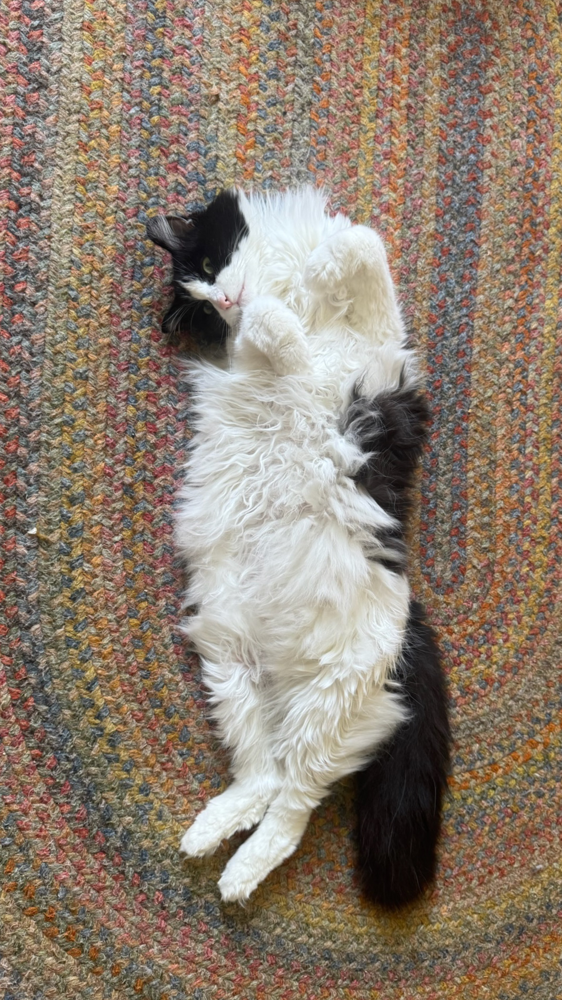

There are many different breeds of cats. There are around 42 to 75 standard cat breeds worldwide. Cats are one of the top house pets in the world with around 49 million households in the United States owning at least one cat. As much as people love cats, many don't know about different breeds and how different they are.
The Top 5 Most Popular Cat Breeds Are
- Maine Coon
- Ragdoll
- Persian
- Exotic Shorthair
- Devon Rex
The reason most people love Maine Coon cats so much is that they are described as "gentle giants". Maine Coons are known for their naturally friendly and social behavior. They are one of the largest domestic cat breeds some times weighing 25 pounds or more. They are the most popular cat breed but not the most common cat in the United States. The Domestic Shorthair cat is the most common house cat.
A Few Fun Facts About Cats
- Cats share around 95% of their genetic makeup with tigers
- Cats spend around 70% of their lives sleeping
- Every cat has a distinct ridge on their nose just like a human has a finger print
- Cats rarely meow to other cats but instead learned it over time as a way to communicate with humans
- Some cats can jump about five times their own height in a single jump